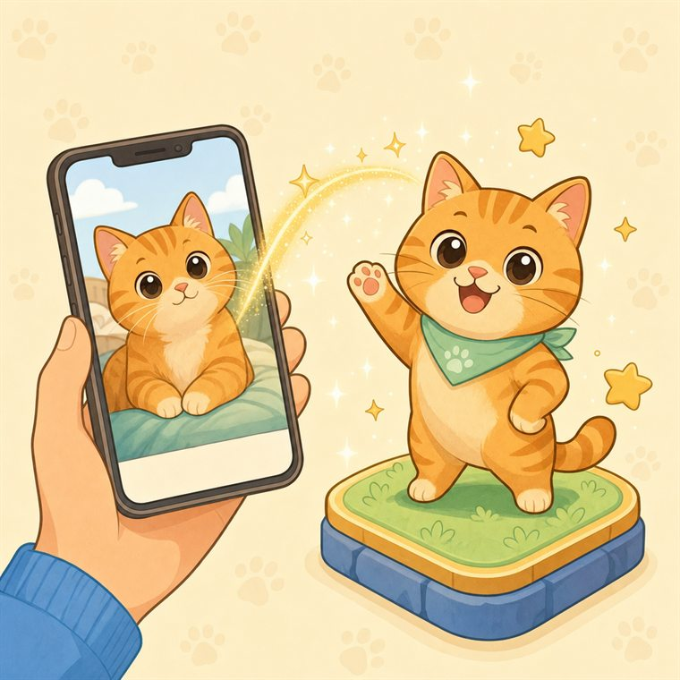

Play Your Pet: Minigames
Privacy Policy
Your pet's photos and voice stay on your phone. This page explains, in plain words, exactly what the game does with data.

- Photos and sounds stay on your phone
- No account needed
- 4 services, all listed below
- We never sell your data
In short
No account is required. Your pet photos, voice recordings and microphone audio are kept on your device and are never uploaded to us — we do not run any servers. The App uses four third-party services that receive limited technical data: Google AdMob (ads), Google Analytics for Firebase (usage statistics that never include your photos, recordings or your pet's name), Google Play Billing (purchases) and Unity Technologies (purchase reporting and crash diagnostics of the game engine). Reminder notifications are scheduled on your device only. We do not sell your data.
This policy applies to the Play Your Pet: Minigames mobile app (the "App") developed by zaxlon. The App lets you bring a photo and the voice of your own pet into mini games.
1Data that stays on your device
- Photos: Pet photos you pick from the gallery or take with the camera are saved in the App's private folder on your device for in-game use only. They are never uploaded to us and are not shared with the services listed below. The system picker is used; the App does not scan your gallery.
- Voice clips: Short sounds you record or select for the "pet voice" feature are stored only on the device and played as in-game effects.
- Voice control (microphone): If you choose "play with voice" in the Voice Pet game, microphone audio is processed in real time on the device only to measure loudness. Audio is not recorded, stored or transmitted.
- Game progress and Android backup: Scores, stars, in-game coins, items, streaks, settings and your pet's name are stored on your device. If backup is turned on in your phone's settings, Android may also back up this progress file (only the progress — never your pet photos or sounds) to your own Google account, so it can come back when you reinstall the App or set up a new phone. This backup is made and kept by Android/Google in your Google account; we cannot access it. You can turn it off in your phone's backup settings.
- Moving to a new phone: On Android 12 and later, if you use Android's device-to-device transfer while setting up a new phone, Android may copy the App's data (including your pet photos and sounds) directly to your own new device. This copy is made by Android; it is not sent to us.
- Notifications: If you allow notifications, reminders (for example when your pet is hungry) are scheduled on your device only — at most one a day and never between 21:30 and 09:00. No server is involved. You can turn them off at any time in Settings → Notifications or in your phone's settings.
- Sharing: When you tap Share, the App creates a picture on your device (the game moment with your pet's photo, name and score) and opens your phone's share menu. The picture goes only to the app you choose; it is not sent to us.
2Third-party services
These services receive only the data described here. All transfers are encrypted in transit (HTTPS).
| Service | Data | Purpose |
|---|---|---|
| Google AdMob and Google's consent tool (UMP) | Advertising ID and app set ID, IP address (used to estimate approximate location), ad and app interactions (e.g. app launches, taps, video views), diagnostics (crash logs, performance), basic device information | Showing and measuring ads, analytics, fraud prevention; asking for and storing your ad consent |
| Google Analytics for Firebase | A random app instance ID, in-app events (e.g. which mini game was started or finished and its score, pet care actions such as feeding, sharing, ad views), session and engagement time, app version, device model, OS version, language, approximate country and city (estimated from the IP address), advertising ID if your ad consent allows it | Understanding how the App is used (which games are played, where players stop) in order to improve it |
| Google Play Billing | Purchase record (order ID, product, time, purchase token) | Processing payments, delivering and restoring items |
| Unity Technologies (Unity IAP, Unity Cloud Diagnostics) | Purchase events with the Google Play purchase record and signature, app version, device model, OS version, language, storage size, a random Unity installation ID (and the advertising ID, if enabled); crash reports and diagnostics | Processing and reporting purchases (analytics), fixing crashes and errors |
2.1 Advertising (Google AdMob)
The App shows optional rewarded video ads in some places (watching them is never required) and, from time to time, a short ad between games — only after a finished game, never during play and not in your first day of play. Ads between games can be turned off permanently with the one-time Remove Ads purchase. Google's Mobile Ads SDK starts when the App opens and processes the data listed above; Google may also use this data under its own policies. In the EEA, the UK and Switzerland, Google's consent form is shown before ads; you can change your choice at any time in Settings → Privacy options. You can reset or delete your advertising ID in your device settings. Ad content is limited to family-friendly (PG) ratings.
Google's policy: policies.google.com/privacy · How Google uses information from partner sites
2.2 Purchases (Google Play Billing)
In-app purchases are handled exclusively by Google Play Billing. We never receive your payment details (such as your card number). Google Play gives the App a purchase record so that your item can be delivered, and restored after a reinstall.
2.3 Unity Technologies
The App is built with the Unity engine. When you make or attempt a purchase, and when existing purchases are confirmed, Unity's in-app purchase library (Unity IAP) sends purchase events to Unity: the product, the Google Play purchase record and its signature, the app version, device model, OS version, language, device storage size and a random installation ID that Unity creates for this installation (and the advertising ID, if enabled). Unity uses this data to process and report purchases. The App may also send crash reports and error diagnostics to Unity (Unity Cloud Diagnostics): the error message and stack trace, the last few log lines, device model, OS version and app version. Crash reports never include your photos or recordings.
Unity's policy: unity.com/legal/privacy-policy
2.4 Usage statistics (Google Analytics for Firebase)
The App uses Google Analytics for Firebase to understand which games are played and where players stop, so that we can improve it. These statistics never include your pet photos, recordings, your pet's name or anything else you add. In the EEA, the UK and Switzerland, statistics are only collected after Google's consent form, and your choice there is applied (Google Consent Mode); you can change it at any time in Settings → Privacy options. Analytics data is kept for 14 months and then deleted automatically. Google signals are turned off.
Google's policy: policies.google.com/privacy · Firebase privacy
3What we do not collect
We do not run servers and do not receive your personal data ourselves. The App does not ask for your name, email, phone number, precise location or contacts, and it has no accounts. Apart from the services listed above, the App contains no other analytics or tracking SDK. We do not sell your data.
4Permissions
| Permission | When / why |
|---|---|
| Photos / media | Only when you choose a photo (e.g. "Add Your Pet"), through the system picker. |
| Camera | Only when you choose to take a photo. |
| Microphone | Only when you start a recording or choose "play with voice". |
| Notifications (Android 13+) | Only if you allow it when Android asks (for example when you first open the App or on the in-game card) or turn on Notifications in Settings. Used only for the on-device reminders described above. |
| Internet | To load ads, process purchases and send the usage statistics and diagnostics described above. The game can be played offline. |
5Deleting your data
You can delete photos and sounds inside the App (e.g. "Reset" / "My Photos"). Uninstalling the App permanently deletes all App data on the device and resets the Unity installation ID and the Firebase app instance ID. Usage statistics are not linked to your name, email or any account, so we cannot find them from an email address; they are deleted automatically after 14 months. You can reset or delete your advertising ID in your device settings and manage your Google data at myaccount.google.com. For data processed by Unity, see Unity's privacy policy above or contact us and we will help forward your request. We keep no data about you on our own servers, so there is no account to delete.
How to request deletion: email yavuzbeg01@gmail.com with the subject "Play Your Pet – data deletion". We will reply and forward your request to Unity for the purchase and crash data it processes. What is kept: Google Play keeps your purchase records under Google's own policies (for example for tax and refund purposes), and progress backed up by Android stays in your own Google account until you delete it there or turn backup off.
6Children
The App is intended for users aged 13 and over and does not knowingly collect personal information from children under 13. If you believe a child has provided us with data, please contact us.
7Security and retention
On-device data is kept in the App's private storage, protected by Android's app sandbox, until you delete it or uninstall the App. Data sent to Google and Unity is encrypted in transit and kept according to their policies.
8Changes and contact
If this policy is updated, the new version will be posted on this page with a new "last updated" date. Questions: yavuzbeg01@gmail.com
Play Your Pet: Minigames
Gizlilik Politikası
Petinizin fotoğrafları ve sesi telefonunuzda kalır. Oyunun verilerle tam olarak ne yaptığını bu sayfada açık bir dille anlatıyoruz.
- Fotoğraf ve sesler telefonunuzda kalır
- Hesap gerekmez
- 4 hizmet, hepsi aşağıda
- Verilerinizi asla satmayız
Kısaca
Hesap açmanız gerekmez. Pet fotoğraflarınız, ses kayıtlarınız ve mikrofon sesiniz cihazınızda kalır ve bize hiçbir zaman yüklenmez — sunucumuz yoktur. Uygulama, sınırlı teknik veri alan dört üçüncü taraf hizmet kullanır: Google AdMob (reklamlar), Google Analytics for Firebase (fotoğraflarınızı, kayıtlarınızı ya da petinizin adını asla içermeyen kullanım istatistikleri), Google Play Faturalandırma (satın almalar) ve Unity Technologies (oyun motorunun satın alma raporlaması ve çökme tanılaması). Hatırlatma bildirimleri yalnızca cihazınızda planlanır. Verilerinizi satmayız.
Bu politika, zaxlon tarafından geliştirilen Play Your Pet: Minigames mobil uygulaması ("Uygulama") için geçerlidir. Uygulama, kendi evcil hayvanınızın fotoğrafını ve sesini mini oyunlara taşımanızı sağlar.
1Cihazınızda kalan veriler
- Fotoğraflar: Galeriden seçtiğiniz ya da kamerayla çektiğiniz evcil hayvan fotoğrafları yalnızca oyun içinde kullanılmak üzere uygulamanın cihazdaki özel klasörüne kaydedilir. Bize hiçbir zaman yüklenmez, aşağıdaki hizmetlerle paylaşılmaz. Seçim için cihazın standart seçicisi kullanılır; uygulama galerinizi taramaz.
- Ses kayıtları: "Pet sesi" özelliğiyle kaydettiğiniz ya da seçtiğiniz kısa sesler yalnızca cihazda saklanır ve oyun içi efekt olarak çalınır.
- Sesle oynama (mikrofon): Sesli Dost oyununda "sesle oyna" seçeneğini seçerseniz mikrofon sesi yalnızca anlık ses seviyesini ölçmek için cihazda gerçek zamanlı işlenir. Ses kaydedilmez, saklanmaz, gönderilmez.
- Oyun ilerlemesi ve Android yedeği: Skorlar, yıldızlar, oyun içi para, eşyalar, seri, ayarlar ve petinizin adı cihazda saklanır. Telefonunuzun ayarlarında yedekleme açıksa Android bu ilerleme dosyasını (yalnızca ilerlemeyi — pet fotoğraflarınızı ve seslerinizi asla) kendi Google hesabınıza yedekleyebilir; böylece uygulamayı yeniden yüklediğinizde ya da yeni telefon kurduğunuzda ilerlemeniz geri gelir. Bu yedeği Android/Google sizin Google hesabınızda oluşturur ve saklar; biz erişemeyiz. Telefonunuzun yedekleme ayarlarından kapatabilirsiniz.
- Yeni telefona geçiş: Android 12 ve sonrasında, yeni telefon kurulumunda Android'in cihazdan cihaza aktarımını kullanırsanız Android, uygulamanın verilerini (pet fotoğraflarınız ve sesleriniz dahil) doğrudan kendi yeni cihazınıza kopyalayabilir. Bu kopyalamayı Android yapar; veriler bize gönderilmez.
- Bildirimler: Bildirimlere izin verirseniz hatırlatmalar (ör. petiniz acıktığında) yalnızca cihazınızda planlanır — günde en fazla bir tane, 21:30 ile 09:00 arasında asla. Hiçbir sunucu kullanılmaz. İstediğiniz zaman Ayarlar → Bildirimler bölümünden ya da telefonunuzun ayarlarından kapatabilirsiniz.
- Paylaşım: Paylaş'a dokunduğunuzda uygulama cihazınızda bir görsel oluşturur (petinizin fotoğrafı, adı ve skoruyla oyun anı) ve telefonunuzun paylaşım menüsünü açar. Görsel yalnızca seçtiğiniz uygulamaya gider; bize gönderilmez.
2Üçüncü taraf hizmetler
Bu hizmetler yalnızca burada açıklanan verileri alır. Tüm aktarımlar şifrelidir (HTTPS).
| Hizmet | Veri | Amaç |
|---|---|---|
| Google AdMob ve Google onay aracı (UMP) | Reklam kimliği ve uygulama grubu kimliği (app set ID), IP adresi (yaklaşık konumu tahmin etmek için), reklam ve uygulama etkileşimleri (ör. uygulama açılışı, dokunma, video izleme), tanılama (çökme günlükleri, performans), temel cihaz bilgileri | Reklam gösterme ve ölçme, analiz, dolandırıcılık önleme; reklam onayınızı sorma ve saklama |
| Google Analytics for Firebase | Rastgele bir uygulama örneği kimliği, uygulama içi olaylar (ör. hangi mini oyunun başlatıldığı ya da bittiği ve skoru, besleme gibi pet bakım işlemleri, paylaşım, reklam izleme), oturum ve etkileşim süresi, uygulama sürümü, cihaz modeli, işletim sistemi sürümü, dil, yaklaşık ülke ve şehir (IP adresinden tahmin edilir), reklam onayınız izin veriyorsa reklam kimliği | Uygulamanın nasıl kullanıldığını (hangi oyunların oynandığını, oyuncuların nerede bıraktığını) anlayıp uygulamayı geliştirmek |
| Google Play Faturalandırma | Satın alma kaydı (sipariş numarası, ürün, zaman, satın alma jetonu) | Ödemeyi işleme, ürünü teslim etme ve geri yükleme |
| Unity Technologies (Unity IAP, Unity Cloud Diagnostics) | Google Play satın alma kaydı ve imzasını içeren satın alma olayları, uygulama sürümü, cihaz modeli, işletim sistemi sürümü, dil, depolama boyutu, rastgele bir Unity kurulum kimliği (etkinse reklam kimliği); çökme raporları ve tanılama | Satın almaları işleme ve raporlama (analiz), çökme ve hataları düzeltme |
2.1 Reklamlar (Google AdMob)
Uygulama bazı yerlerde isteğe bağlı ödüllü video reklam gösterir (izlemek hiçbir zaman zorunlu değildir) ve zaman zaman oyunlar arasında kısa bir reklam çıkar — yalnızca biten bir oyundan sonra; oyun sırasında ve oynadığınız ilk gün çıkmaz. Oyunlar arası reklamlar tek seferlik Reklamları Kaldır satın almasıyla kalıcı olarak kapatılabilir. Google'ın reklam SDK'sı uygulama açılınca başlar ve yukarıdaki verileri işler; Google bu verileri kendi politikaları kapsamında da kullanabilir. Avrupa Ekonomik Alanı, Birleşik Krallık ve İsviçre'de reklamlardan önce Google'ın onay formu gösterilir; tercihinizi istediğiniz zaman Ayarlar → Gizlilik seçenekleri bölümünden değiştirebilirsiniz. Reklam kimliğinizi cihaz ayarlarından sıfırlayabilir veya silebilirsiniz. Reklam içeriği ailelere uygun (PG) derecelerle sınırlandırılmıştır.
Google'ın politikası: policies.google.com/privacy · Google ortak sitelerde verileri nasıl kullanır
2.2 Satın almalar (Google Play Faturalandırma)
Uygulama içi satın almalar yalnızca Google Play Faturalandırma üzerinden yapılır. Ödeme bilgileriniz (ör. kart numaranız) bize ulaşmaz. Google Play, ürününüzün teslim edilmesi ve yeniden kurulumdan sonra geri yüklenmesi için uygulamaya bir satın alma kaydı verir.
2.3 Unity Technologies
Uygulama Unity oyun motoruyla geliştirilmiştir. Bir satın alma yaptığınızda veya denediğinizde ve mevcut satın almalar doğrulanırken Unity'nin satın alma kitaplığı (Unity IAP) Unity'ye satın alma olayları gönderir: ürün, Google Play satın alma kaydı ve imzası, uygulama sürümü, cihaz modeli, işletim sistemi sürümü, dil, cihaz depolama boyutu ve Unity'nin bu kurulum için oluşturduğu rastgele bir kurulum kimliği (etkinse reklam kimliği). Unity bu verileri satın almaları işlemek ve raporlamak için kullanır. Uygulama ayrıca çökme raporlarını ve hata tanılamasını Unity'ye gönderebilir (Unity Cloud Diagnostics): hata mesajı ve yığın izi, son birkaç günlük satırı, cihaz modeli, işletim sistemi sürümü ve uygulama sürümü. Çökme raporları fotoğraflarınızı veya kayıtlarınızı asla içermez.
Unity'nin politikası: unity.com/legal/privacy-policy
2.4 Kullanım istatistikleri (Google Analytics for Firebase)
Uygulama, hangi oyunların oynandığını ve oyuncuların nerede bıraktığını anlamak ve uygulamayı geliştirmek için Google Analytics for Firebase kullanır. Bu istatistikler pet fotoğraflarınızı, kayıtlarınızı, petinizin adını ya da eklediğiniz başka hiçbir içeriği asla içermez. Avrupa Ekonomik Alanı, Birleşik Krallık ve İsviçre'de istatistikler yalnızca Google'ın onay formundan sonra toplanır ve oradaki tercihiniz uygulanır (Google onay modu); tercihinizi istediğiniz zaman Ayarlar → Gizlilik seçenekleri bölümünden değiştirebilirsiniz. Analiz verileri 14 ay saklanır, ardından otomatik olarak silinir. Google sinyalleri kapalıdır.
Google'ın politikası: policies.google.com/privacy · Firebase gizliliği
3Toplamadığımız veriler
Sunucu işletmeyiz ve kişisel verilerinizi kendimiz almayız. Uygulama adınızı, e-postanızı, telefon numaranızı, kesin konumunuzu veya kişilerinizi istemez; hesap sistemi yoktur. Yukarıda sayılan hizmetler dışında uygulamada başka analitik veya izleme SDK'sı yoktur. Verilerinizi satmayız.
4İzinler
| İzin | Ne zaman / neden |
|---|---|
| Fotoğraflar / medya | Yalnızca siz bir fotoğraf seçtiğinizde (ör. "Hayvanını Ekle"), sistem seçicisiyle. |
| Kamera | Yalnızca siz fotoğraf çekmeyi seçtiğinizde. |
| Mikrofon | Yalnızca ses kaydı başlattığınızda veya "sesle oyna"yı seçtiğinizde. |
| Bildirimler (Android 13+) | Yalnızca Android sorduğunda (ör. uygulamayı ilk açtığınızda ya da oyundaki kartta) izin verirseniz veya Ayarlar'da Bildirimler'i açarsanız. Yalnızca yukarıda açıklanan, cihazda planlanan hatırlatmalar için kullanılır. |
| İnternet | Reklamları yüklemek, satın almaları işlemek ve yukarıda açıklanan kullanım istatistiklerini ve tanılamayı göndermek için. Oyun internetsiz de oynanabilir. |
5Verilerinizi silme
Uygulamadaki fotoğraf ve sesleri oyun içinden (ör. "Sıfırla" / "Fotoğraflarım") silebilirsiniz. Uygulamayı kaldırmak cihazdaki tüm uygulama verilerini kalıcı olarak siler; Unity kurulum kimliğini ve Firebase uygulama örneği kimliğini sıfırlar. Kullanım istatistikleri adınıza, e-postanıza ya da herhangi bir hesaba bağlı olmadığından bir e-posta adresinden yola çıkarak bulunamaz; 14 ay sonra otomatik olarak silinir. Reklam kimliğinizi cihaz ayarlarından sıfırlayabilir veya silebilir, Google verilerinizi myaccount.google.com adresinden yönetebilirsiniz. Unity'nin işlediği veriler için yukarıdaki Unity politikasına bakabilir ya da bize yazabilirsiniz; talebinizi iletmenize yardımcı oluruz. Kendi sunucularımızda sizinle ilgili veri tutmadığımızdan silinecek hesap yoktur.
Silme talebi nasıl yapılır: yavuzbeg01@gmail.com adresine "Play Your Pet – veri silme" konulu bir e-posta gönderin. Size yanıt verir, Unity'nin işlediği satın alma ve çökme verileri için talebinizi Unity'ye iletiriz. Saklanmaya devam edenler: Google Play satın alma kayıtlarınızı kendi politikaları kapsamında (ör. vergi ve iade amaçlarıyla) saklar; Android'in yedeklediği ilerleme ise siz oradan silene ya da yedeklemeyi kapatana kadar kendi Google hesabınızda kalır.
6Çocuklar
Uygulama 13 yaş ve üzeri kullanıcılar için tasarlanmıştır ve 13 yaşın altındaki çocuklardan bilerek kişisel veri toplamaz. Bir çocuğun bize veri ilettiğini düşünüyorsanız lütfen bizimle iletişime geçin.
7Güvenlik ve saklama
Cihazdaki veriler uygulamanın özel klasöründe tutulur ve siz silene veya uygulamayı kaldırana kadar Android'in uygulama yalıtımıyla korunur. Google ve Unity'ye gönderilen veriler aktarım sırasında şifrelenir ve bu şirketlerin politikalarına göre saklanır.
8Değişiklikler ve iletişim
Bu politika güncellenirse yeni sürüm bu sayfada yayımlanır ve "son güncelleme" tarihi yenilenir. Sorularınız için: yavuzbeg01@gmail.com
Play Your Pet: Minigames
Política de privacidad
Las fotos y la voz de tu mascota se quedan en tu teléfono. Aquí te explicamos con palabras sencillas qué hace el juego con los datos.
- Fotos y sonidos se quedan en tu teléfono
- Sin cuenta
- 4 servicios, todos abajo
- Nunca vendemos tus datos
En resumen
No necesitas una cuenta. Las fotos de tu mascota, tus grabaciones y el audio del micrófono se quedan en tu dispositivo y nunca se nos envían — no tenemos servidores. La Aplicación usa cuatro servicios de terceros que reciben datos técnicos limitados: Google AdMob (anuncios), Google Analytics for Firebase (estadísticas de uso que nunca incluyen tus fotos, grabaciones ni el nombre de tu mascota), Google Play Billing (compras) y Unity Technologies (informes de compras y diagnóstico de errores del motor del juego). Las notificaciones de recordatorio se programan solo en tu dispositivo. No vendemos tus datos.
Esta política se aplica a la aplicación móvil Play Your Pet: Minigames (la "Aplicación"), desarrollada por zaxlon. La Aplicación te permite llevar la foto y la voz de tu propia mascota a minijuegos.
1Datos que permanecen en tu dispositivo
- Fotos: Las fotos de mascotas que eliges de la galería o tomas con la cámara se guardan en la carpeta privada de la Aplicación solo para usarlas en el juego. Nunca se nos envían ni se comparten con los servicios indicados más abajo. Se usa el selector del sistema; la Aplicación no explora tu galería.
- Sonidos: Los sonidos cortos que grabas o eliges para la función "voz de mascota" se guardan solo en el dispositivo y se reproducen como efectos del juego.
- Control por voz (micrófono): Si eliges "jugar con la voz" en el juego Mascota por Voz, el audio del micrófono se procesa en tiempo real en el dispositivo solo para medir el volumen. El audio no se graba, no se guarda y no se envía.
- Progreso del juego y copia de seguridad de Android: Puntuaciones, estrellas, monedas, objetos, rachas, ajustes y el nombre de tu mascota se guardan en tu dispositivo. Si la copia de seguridad está activada en los ajustes del teléfono, Android puede guardar también este archivo de progreso (solo el progreso, nunca las fotos ni los sonidos de tu mascota) en tu propia cuenta de Google, para que vuelva al reinstalar la Aplicación o configurar un teléfono nuevo. Esa copia la crea y la guarda Android/Google en tu cuenta de Google; nosotros no podemos acceder a ella. Puedes desactivarla en los ajustes de copia de seguridad del teléfono.
- Cambio de teléfono: En Android 12 o posterior, si usas la transferencia de dispositivo a dispositivo de Android al configurar un teléfono nuevo, Android puede copiar los datos de la Aplicación (incluidas las fotos y los sonidos de tu mascota) directamente a tu propio dispositivo nuevo. Esa copia la hace Android; no se nos envía.
- Notificaciones: Si permites las notificaciones, los recordatorios (p. ej. cuando tu mascota tiene hambre) se programan solo en tu dispositivo — como máximo uno al día y nunca entre las 21:30 y las 09:00. No se usa ningún servidor. Puedes desactivarlas en cualquier momento en Ajustes → Notificaciones o en los ajustes del teléfono.
- Compartir: Cuando tocas Compartir, la Aplicación crea una imagen en tu dispositivo (un momento del juego con la foto, el nombre y la puntuación de tu mascota) y abre el menú para compartir del teléfono. La imagen solo va a la aplicación que elijas; no se nos envía.
2Servicios de terceros
Estos servicios solo reciben los datos descritos aquí. Todas las transferencias están cifradas (HTTPS).
| Servicio | Datos | Finalidad |
|---|---|---|
| Google AdMob y herramienta de consentimiento de Google (UMP) | ID de publicidad e ID de conjunto de apps, dirección IP (para estimar la ubicación aproximada), interacciones con anuncios y con la app (p. ej. aperturas, toques, vídeos vistos), diagnóstico (registros de fallos, rendimiento), información básica del dispositivo | Mostrar y medir anuncios, analítica, prevención del fraude; pedir y guardar tu consentimiento publicitario |
| Google Analytics for Firebase | Un ID de instancia de la app aleatorio, eventos dentro de la app (p. ej. qué minijuego se inicia o termina y su puntuación, cuidados de la mascota como darle de comer, compartir, ver anuncios), duración de la sesión y de la interacción, versión de la app, modelo del dispositivo, versión del sistema, idioma, país y ciudad aproximados (estimados a partir de la dirección IP), ID de publicidad si tu consentimiento publicitario lo permite | Entender cómo se usa la Aplicación (qué juegos se juegan, dónde abandonan los jugadores) para mejorarla |
| Google Play Billing | Registro de compra (n.º de pedido, producto, fecha, token de compra) | Procesar pagos, entregar y restaurar artículos |
| Unity Technologies (Unity IAP, Unity Cloud Diagnostics) | Eventos de compra con el registro y la firma de Google Play, versión de la app, modelo del dispositivo, versión del sistema, idioma, tamaño de almacenamiento, un ID de instalación aleatorio de Unity (y el ID de publicidad, si está activado); informes de fallos y diagnóstico | Procesar e informar de compras (analítica), corregir fallos y errores |
2.1 Publicidad (Google AdMob)
La Aplicación muestra anuncios de vídeo con recompensa opcionales (verlos nunca es obligatorio) y, de vez en cuando, un anuncio breve entre partidas: solo después de terminar una partida, nunca mientras juegas ni durante tu primer día de juego. Los anuncios entre partidas se pueden quitar para siempre con la compra única Quitar anuncios. El SDK de anuncios de Google se inicia al abrir la Aplicación y trata los datos indicados arriba; Google también puede usarlos según sus propias políticas. En el EEE, el Reino Unido y Suiza se muestra el formulario de consentimiento de Google antes de los anuncios; puedes cambiar tu elección en cualquier momento en Ajustes → Opciones de privacidad. Puedes restablecer o eliminar tu ID de publicidad en los ajustes del dispositivo. El contenido publicitario se limita a clasificaciones aptas para familias (PG).
Política de Google: policies.google.com/privacy · Cómo usa Google la información de sitios asociados
2.2 Compras (Google Play Billing)
Las compras dentro de la aplicación se gestionan exclusivamente mediante Google Play Billing. Nunca recibimos tus datos de pago (como el número de tarjeta). Google Play entrega a la Aplicación un registro de compra para que tu artículo se entregue y se restaure tras reinstalar.
2.3 Unity Technologies
La Aplicación está creada con el motor Unity. Cuando haces o intentas una compra, y cuando se confirman compras existentes, la biblioteca de compras de Unity (Unity IAP) envía eventos de compra a Unity: el producto, el registro de compra de Google Play y su firma, la versión de la app, el modelo del dispositivo, la versión del sistema, el idioma, el tamaño de almacenamiento y un ID de instalación aleatorio que Unity crea para esta instalación (y el ID de publicidad, si está activado). Unity usa estos datos para procesar e informar de las compras. La Aplicación también puede enviar informes de fallos y diagnóstico de errores a Unity (Unity Cloud Diagnostics): el mensaje de error y la traza de pila, las últimas líneas del registro, el modelo del dispositivo, la versión del sistema y la versión de la app. Los informes de fallos nunca incluyen tus fotos ni tus grabaciones.
Política de Unity: unity.com/legal/privacy-policy
2.4 Estadísticas de uso (Google Analytics for Firebase)
La Aplicación usa Google Analytics for Firebase para entender qué juegos se juegan y dónde abandonan los jugadores, y así mejorarla. Estas estadísticas nunca incluyen las fotos de tu mascota, tus grabaciones, el nombre de tu mascota ni ningún otro contenido que añadas. En el EEE, el Reino Unido y Suiza las estadísticas solo se recopilan después del formulario de consentimiento de Google y respetan tu elección en él (modo de consentimiento de Google); puedes cambiarla en cualquier momento en Ajustes → Opciones de privacidad. Los datos de analítica se conservan 14 meses y después se eliminan automáticamente. Las señales de Google están desactivadas.
Política de Google: policies.google.com/privacy · Privacidad de Firebase
3Lo que no recopilamos
No tenemos servidores y no recibimos tus datos personales directamente. La Aplicación no te pide nombre, correo, teléfono, ubicación precisa ni contactos, y no tiene cuentas. Aparte de los servicios indicados arriba, no contiene ningún otro SDK de analítica o seguimiento. No vendemos tus datos.
4Permisos
| Permiso | Cuándo / por qué |
|---|---|
| Fotos / multimedia | Solo cuando eliges una foto (p. ej. "Añade tu Mascota"), mediante el selector del sistema. |
| Cámara | Solo cuando decides tomar una foto. |
| Micrófono | Solo cuando inicias una grabación o eliges "jugar con la voz". |
| Notificaciones (Android 13+) | Solo si lo permites cuando Android lo pregunta (p. ej. al abrir la Aplicación por primera vez o en la tarjeta del juego) o activas Notificaciones en Ajustes. Se usa solo para los recordatorios programados en el dispositivo descritos arriba. |
| Internet | Para cargar anuncios, procesar compras y enviar las estadísticas de uso y el diagnóstico descritos arriba. El juego se puede jugar sin conexión. |
5Eliminar tus datos
Puedes eliminar fotos y sonidos dentro de la Aplicación (p. ej. "Reiniciar" / "Mis Fotos"). Desinstalar la Aplicación elimina de forma permanente todos sus datos del dispositivo y restablece el ID de instalación de Unity y el ID de instancia de Firebase. Como las estadísticas de uso no están vinculadas a tu nombre, correo ni a ninguna cuenta, no se pueden localizar a partir de una dirección de correo; se eliminan automáticamente a los 14 meses. Puedes restablecer o eliminar tu ID de publicidad en los ajustes del dispositivo y gestionar tus datos de Google en myaccount.google.com. Para los datos que trata Unity, consulta la política de Unity indicada arriba o escríbenos y te ayudaremos a enviar tu solicitud. No guardamos datos tuyos en servidores propios, por lo que no hay cuenta que eliminar.
Cómo solicitar la eliminación: envía un correo a yavuzbeg01@gmail.com con el asunto "Play Your Pet – eliminar datos". Te responderemos y enviaremos tu solicitud a Unity para los datos de compras y fallos que trata. Lo que se conserva: Google Play guarda tus registros de compra según sus propias políticas (p. ej. por motivos fiscales y de reembolso), y el progreso copiado por Android permanece en tu propia cuenta de Google hasta que lo elimines allí o desactives la copia de seguridad.
6Menores
La Aplicación está destinada a usuarios de 13 años o más y no recopila a sabiendas datos personales de menores de 13 años. Si crees que un menor nos ha proporcionado datos, contáctanos.
7Seguridad y conservación
Los datos del dispositivo se guardan en el almacenamiento privado de la Aplicación, protegido por el aislamiento de aplicaciones de Android, hasta que los elimines o desinstales la Aplicación. Los datos enviados a Google y Unity se cifran durante la transferencia y se conservan según sus políticas.
8Cambios y contacto
Si esta política se actualiza, la nueva versión se publicará en esta página con una nueva fecha de "última actualización". Preguntas: yavuzbeg01@gmail.com
© 2026 zaxlon · Play Your Pet: Minigames